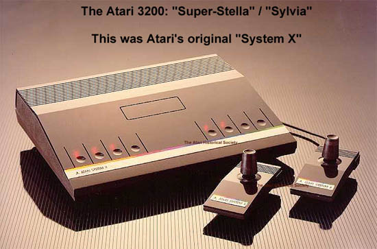
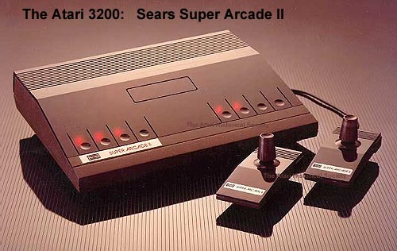

Super-Stella / Sylvia
According to engineering logs, in 1980 through 1981 Atari began work on a new video game console to replace the Atari 2600 Video Computer System. This new console during development took on many codenames: Sylvia, Super-Stella and also... PAM (with notes next to it saying "Super-Stella: Multipurpose". Popular myth stated that the new console was to be based on a new 10-bit processor and would have more memory, higher resolution graphics and improved sound while maintaining compatibility with all existing Atari 2600 console games.

Popular myth states that Prototypes were built and a one or two preliminary games were written for the new "super" console. However before the design could be finalized on the new console, the feedback from the programmers was that the console was too difficult to program on and they didn't want to do games on it since it was so difficult. However, this has never been fully verified.
In January 2010, the Atari Museum discovered the actual schematics to Sylvia (Model #SS1000) aka "Super-Stella" Which, according to an interview with Steve Bristow, would have a new TIA chip called the STIA (or Super TIA) with enhanced graphics. Also added to the design was a version of the ANTIC chip called the FRANTIC. Included memory would've been 2k, which would've been a huge jump from the Atari 2600's original 128 bytes of memory. Another interesting addition to the design was a Voltrax SC01 Voice Synthesizer.
Schematics for the preliminary design and a "Black box"
development system are shown below, click on each to view a large sized detailed view.
Meanwhile, time was running short for
Atari, Intellivision
was breathing down Atari's neck so to speak and rumor had it that other
companies were developing new game consoles. The 2600 with
its aging technology was in danger, a new console was needed and quickly.
Before project Sylvia even got a name (The console was named ATARI SYSTEM
X) the project was cancelled and replaced with a quick solution.
Repackaging the Atari home computer technology into a game playing console
codenamed PAM, Atari almost named the second "SYSTEM X" PAM which would
have stood for P.ersonal A.rcade M.achine, however Atari 5200 was chosen.

During the development of the new Atari 3200: System X, Atari was also preparing a clone version of it to be sold through its Sears distribution channel. This console was to be called the Sears Super Arcade II. Actual prototypes do exist of the case designs, the above pictures were donated by Roy Nishi, former head of Atari's Industrial Design group.
{kind=link}
{kind=link}